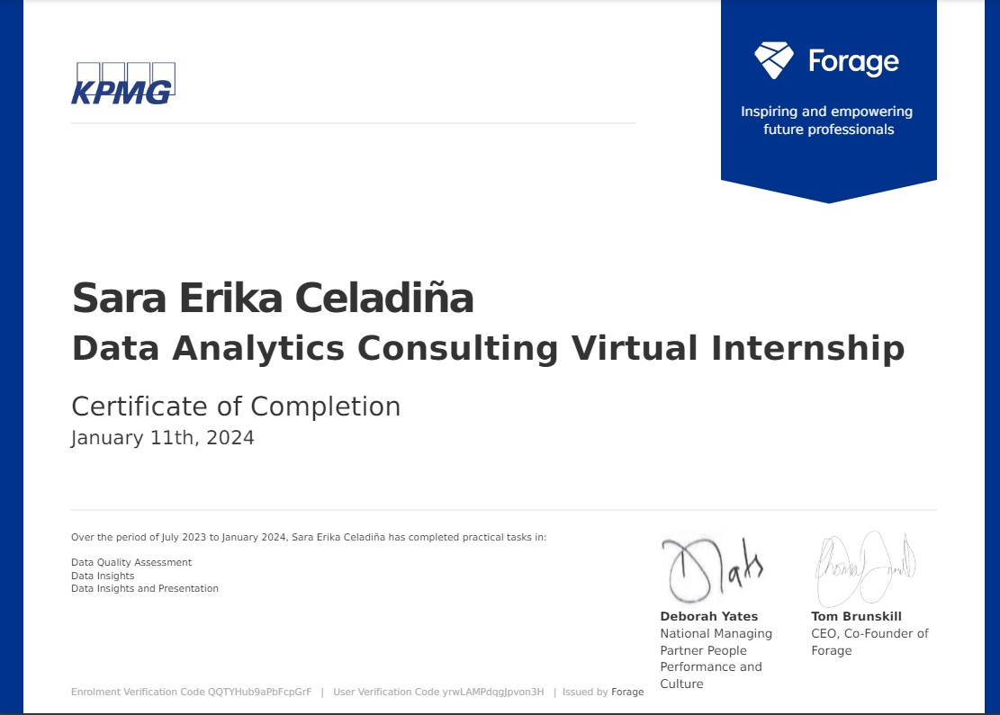
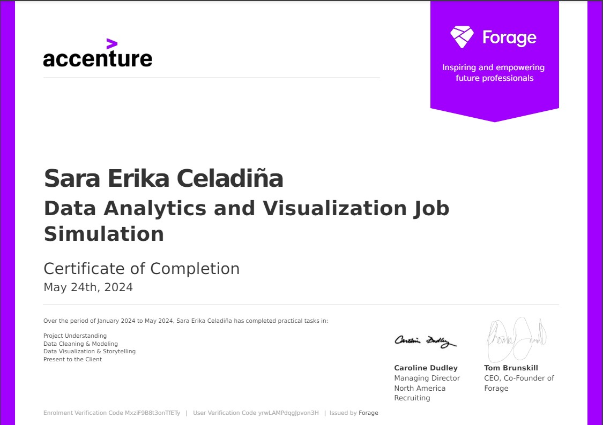

Virtual Experience
Before focusing on Data Engineering, I explored data analytics and artificial intelligence through virtual job simulations. These self-paced experiences introduced me to practical business scenarios, data analysis, and communicating findings.
The following programs were completed as virtual job simulations, not employment or formal internships with the companies.
KPMG Data Analytics
Program Type: Virtual Job Simulation
This simulation introduced me to the process of assessing data quality, exploring business information, and presenting insights through visualizations.

Topics Covered
- Data quality assessment
- Data exploration and insights
- Data visualization
- Communicating analytical findings
What I Learned
The importance of checking data quality before performing analysis and presenting findings in a clear, understandable way.
Accenture Data Analytics
Program Type: Virtual Job Simulation
This simulation focused on understanding a business problem, working with data, and communicating insights through a structured analytical approach.

Topics Covered
- Project planning
- Data understanding
- Data modeling
- Data analysis
- Data storytelling
What I Learned
How to approach an analytical task from understanding the business question to organizing findings for a nontechnical audience.
Cognizant Artificial Intelligence
Program Type: Virtual Job Simulation
This simulation explored how data analysis and artificial intelligence can be used to investigate business challenges, including supply chain-related problems.
Topics Covered
- Understanding business requirements
- Exploring supply chain challenges
- Exploratory data analysis using Python
- Data preparation and feature engineering concepts
- Communicating findings to stakeholders
What I Learned
This experience helped me understand how data exploration supports problem-solving and why communicating technical findings clearly is important in business settings.
From Data Analytics to Data Engineering
These virtual experiences helped me build a foundation in understanding and analyzing data. As I continued learning, I became more interested in the processes behind the data itself: how it's collected, cleaned, transformed, and made available for analysis.
That interest eventually led me to pursue Data Engineering through the FTW Foundation x Accenture scholarship program and hands-on projects using Databricks, SQL, Python, and PySpark.